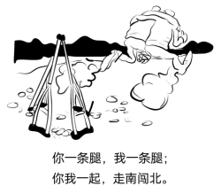

第 1 题 #
1.A. selectedB. preparedC. obligedD. pleased
点击查看答案
此题暂无可用答案。
考研英语 · questions · 2008
题号和章节目录由结构化数据生成。选项统一显示 A.、B.、C.、D.；原标记保留在 JSON 中。
Read the following text. Choose the best word(s) for each numbered blank and mark A, B, C or D on the ANSWER SHEET 1. (10 points)
The idea that some groups of people may be more intelligent than others is one of those hypotheses that dare not speak its name. But Gregory Cochran is 1 to say it anyway. He is that 2 bird, a scientist who works independently 3 any institution. He helped popularize the idea that some diseases not 4 thought to have a bacterial cause were actually infections, which aroused much controversy when it was first suggested.
5 he, however, might tremble at the 6 of what he is about to do. Together with another two scientists, he is publishing a paper which not only 7 that one group of humanity is more intelligent than the others, but explains the process that has brought this about. The group in 8 are a particular people originated from central Europe. The process is natural selection.
This group generally do well in IQ tests, 9 12-15 points above the 10 value of 100, and have contributed 11 to the intellectual and cultural life of the West, as the 12 of their elites, including several world-renowned scientists, 13 . They also suffer more often than most people from a number of nasty genetic diseases, such as breast cancer. These facts, 14 , have previously been thought unrelated. The former has been 15 to social effects, such as a strong tradition of 16 education. The latter was seen as a (an) 17 of genetic isolation. Dr. Cochran suggests that the intelligence and diseases are intimately 18 . His argument is that the unusual history of these people has 19 them to unique evolutionary pressures that have resulted in this 20 state of affairs.
此题暂无可用答案。
此题暂无可用答案。
此题暂无可用答案。
此题暂无可用答案。
此题暂无可用答案。
此题暂无可用答案。
此题暂无可用答案。
此题暂无可用答案。
此题暂无可用答案。
此题暂无可用答案。
此题暂无可用答案。
此题暂无可用答案。
此题暂无可用答案。
此题暂无可用答案。
此题暂无可用答案。
此题暂无可用答案。
此题暂无可用答案。
此题暂无可用答案。
此题暂无可用答案。
此题暂无可用答案。
Read the following four texts. Answer the questions below each text by choosing A, B, C or D. Mark your answers on the ANSWER SHEET 1. (40 points)
While still catching up to men in some spheres of modern life, women appear to be way ahead in at least one undesirable category. “Women are particularly susceptible to developing depression and anxiety disorders in response to stress compared to men,” according to Dr. Yehuda, chief psychiatrist at New York’s Veteran’s Administration Hospital.
Studies of both animals and humans have shown that sex hormones somehow affect the stress response, causing females under stress to produce more of the trigger chemicals than do males under the same conditions. In several of the studies, when stressed-out female rats had their ovaries (the female reproductive organs) removed, their chemical responses became equal to those of the males.
Adding to a woman’s increased dose of stress chemicals, are her increased “opportunities” for stress. “It’s not necessarily that women don’t cope as well. It’s just that they have so much more to cope with,” says Dr. Yehuda. “Their capacity for tolerating stress may even be greater than men’s,” she observes, “it’s just that they’re dealing with so many more things that they become worn out from it more visibly and sooner.”
Dr. Yehuda notes another difference between the sexes. “I think that the kinds of things that women are exposed to tend to be in more of a chronic or repeated nature. Men go to war and are exposed to combat stress. Men are exposed to more acts of random physical violence. The kinds of interpersonal violence that women are exposed to tend to be in domestic situations, by, unfortunately, parents or other family members, and they tend not to be one-shot deals. The wear-and-tear that comes from these longer relationships can be quite devastating.”
Adeline Alvarez married at 18 and gave birth to a son, but was determined to finish college. “I struggled a lot to get the college degree. I was living in so much frustration that that was my escape, to go to school, and get ahead and do better.” Later, her marriage ended and she became a single mother. “It’s the hardest thing to take care of a teenager, have a job, pay the rent, pay the car payment, and pay the debt. I lived from paycheck to paycheck.”
Not everyone experiences the kinds of severe chronic stresses Alvarez describes. But most women today are coping with a lot of obligations, with few breaks, and feeling the strain. Alvarez’s experience demonstrates the importance of finding ways to diffuse stress before it threatens your health and your ability to function.
21. Which of the following is true according to the first two paragraphs?
此题暂无可用答案。
22. Dr. Yehuda’s research suggests that women____
此题暂无可用答案。
23. According to Paragraph 4, the stress women confront tends to be ____
此题暂无可用答案。
24. The sentence “I lived from paycheck to paycheck.” (Paragraph 5) shows that ____
此题暂无可用答案。
25. Which of the following would be the best title for the text?
此题暂无可用答案。
It used to be so straightforward. A team of researchers working together in the laboratory would submit the results of their research to a journal. A journal editor would then remove the authors’ names and affiliations from the paper and send it to their peers for review. Depending on the comments received, the editor would accept the paper for publication or decline it. Copyright rested with the journal publisher, and researchers seeking knowledge of the results would have to subscribe to the journal.
No longer. The Internet — and pressure from funding agencies, who are questioning why commercial publishers are making money from government-funded research by restricting access to it — is making free access to scientific results a reality. The Organization for Economic Co-operation and Development (OECD) has just issued a report describing the far-reaching consequences of this. The report, by John Houghton of Victoria University in Australia and Graham Vickery of the OECD, makes heavy reading for publishers who have, so far, made handsome profits. But it goes further than that. It signals a change in what has, until now, been a key element of scientific endeavor.
The value of knowledge and the return on the public investment in research depends, in part, upon wide distribution and ready access. It is big business. In America, the core scientific publishing market is estimated at between $7 billion and $11 billion. The International Association of Scientific, Technical and Medical Publisher says that there are more than 2,000 publishers worldwide specializing in these subjects. They publish more than 1.2 million articles each year in some 16,000 journals.
This is now changing. According to the OECD report, some 75% of scholarly journals are now online. Entirely new business models are emerging; three main ones were identified by the report’s authors. There is the so-called big deal, where institutional subscribers pay for access to a collection of online journal titles through site-licensing agreements. There is open-access publishing, typically supported by asking the author (or his employer) to pay for the paper to be published. Finally, there are open-access archives, where organizations such as universities or international laboratories support institutional repositories. Other models exist that are hybrids of these three, such as delayed open-access, where journals allow only subscribers to read a paper for the first six months, before making it freely available to everyone who wishes to see it.
All this could change the traditional form of the peer-review process, at least for the publication of papers.
26. In the first paragraph, the author discusses ____
此题暂无可用答案。
27. Which of the following is true of the OECD report?
此题暂无可用答案。
28. According to the text, online publication is significant in that ____
此题暂无可用答案。
29. With the open-access publishing model, the author of a paper is required to ____
此题暂无可用答案。
30. Which of the following best summarizes the text?
此题暂无可用答案。
In the early 1960s Wilt Chamberlain was one of only three players in the National Basketball Association (NBA) listed at over seven feet. If he had played last season, however, he would have been one of 42. The bodies playing major professional sports have changed dramatically over the years, and managers have been more than willing to adjust team uniforms to fit the growing numbers of bigger, longer frames.
The trend in sports, though, may be obscuring an unrecognized reality: Americans have generally stopped growing. Though typically about two inches taller now than 140 years ago, today’s people — especially those born to families who have lived in the U.S. for many generations — apparently reached their limit in the early 1960s. And they aren't likely to get any taller. “In the general population today, at this genetic, environmental level, we’ve pretty much gone as far as we can go,” says anthropologist William Cameron Chumlea of Wright State University. In the case of NBA players, their increase in height appears to result from the increasingly common practice of recruiting players from all over the world.
Growth, which rarely continues beyond the age of 20, demands calories and nutrients — notably, protein — to feed expanding tissues. At the start of the 20th century, under-nutrition and childhood infections got in the way. But as diet and health improved, children and adolescents have, on average, increased in height by about an inch and a half every 20 years, a pattern known as the secular trend in height. Yet according to the Centers for Disease Control and Prevention, average height — 5′9″ for men, 5′4″ for women — hasn’t really changed since 1960.
Genetically speaking, there are advantages to avoiding substantial height. During childbirth, larger babies have more difficulty passing through the birth canal. Moreover, even though humans have been upright for millions of years, our feet and back continue to struggle with bipedal posture and cannot easily withstand repeated strain imposed by oversize limbs. “There are some real constraints that are set by the genetic architecture of the individual organism,” says anthropologist William Leonard of Northwestern University.
Genetic maximums can change, but don’t expect this to happen soon. Claire C. Gordon, senior anthropologist at the Army Research Center in Natick, Mass., ensures that 90 percent of the uniforms and workstations fit recruits without alteration.
She says that, unlike those for basketball, the length of military uniforms has not changed for some time. And if you need to predict human height in the near future to design a piece of equipment, Gordon says that by and large, “you could use today’s data and feel fairly confident.”
31. Wilt Chamberlain is cited as an example to ____
此题暂无可用答案。
32. Which of the following plays a key role in body growth according to the text?
此题暂无可用答案。
33. On which of the following statements would the author most probably agree?
此题暂无可用答案。
34. We learn from the last paragraph that in the near future ____
此题暂无可用答案。
35. The text intends to tell us that ____
此题暂无可用答案。
In 1784, five years before he became president of the United States, George Washington, 52, was nearly toothless. So he hired a dentist to transplant nine teeth into his jaw — having extracted them from the mouths of his slaves.
That’s a far different image from the cherry-tree-chopping George most people remember from their history books. But recently, many historians have begun to focus on the roles slavery played in the lives of the founding generation. They have been spurred in part by DNA evidence made available in 1998, which almost certainly proved Thomas Jefferson had fathered at least one child with his slave Sally Hemings. And only over the past 30 years have scholars examined history from the bottom up. Works of several historians reveal the moral compromises made by the nation’s early leaders and the fragile nature of the country’s infancy. More significantly, they argue that many of the Founding Fathers knew slavery was wrong — and yet most did little to fight it.
More than anything, the historians say, the founders were hampered by the culture of their time. While Washington and Jefferson privately expressed distaste for slavery, they also understood that it was part of the political and economic bedrock of the country they helped to create.
For one thing, the South could not afford to part with its slaves. Owning slaves was “like having a large bank account,” says Wiencek, author of An Imperfect God: George Washington, His Slaves, and the Creation of America. The southern states would not have signed the Constitution without protections for the “peculiar institution,” including a clause that counted a slave as three fifths of a man for purposes of congressional representation.
And the statesmen’s political lives depended on slavery. The three-fifths formula handed Jefferson his narrow victory in the presidential election of 1800 by inflating the votes of the southern states in the Electoral College. Once in office, Jefferson extended slavery with the Louisiana Purchase in 1803; the new land was carved into 13 states, including three slave states.
Still, Jefferson freed Hemings’s children — though not Hemings herself or his approximately 150 other slaves. Washington, who had begun to believe that all men were created equal after observing the bravery of the black soldiers during the
Revolutionary War, overcame the strong opposition of his relatives to grant his slaves their freedom in his will. Only a decade earlier, such an act would have required legislative approval in Virginia.
36. George Washington’s dental surgery is mentioned to ____
此题暂无可用答案。
37. We may infer from the second paragraph that ____
此题暂无可用答案。
38. What do we learn about Thomas Jefferson?
此题暂无可用答案。
39. Which of the following is true according to the text?
此题暂无可用答案。
40. Washington’s decision to free slaves originated from his ____
此题暂无可用答案。
In the following text, some sentences have been removed. For Questions 41-45, choose the most suitable one from the list A-G to fit into each of the numbered blanks. There are two extra choices, which do not fit in any of the blanks. Mark your answers on the ANSWER SHEET 1. (10 points)
The time for sharpening pencils, arranging your desk, and doing almost anything else instead of writing has ended. The first draft will appear on the page only if you stop avoiding the inevitable and sit, stand up, or lie down to write. (41)__________________
Be flexible. Your outline should smoothly conduct you from one point to the next, but do not permit it to railroad you. If a relevant and important idea occurs to you now, work it into the draft. (42)_______________________________
Grammar, punctuation, and spelling can wait until you revise. Concentrate on what you are saying. Good writing most often occurs when you are in hot pursuit of an idea rather than in a nervous search for errors.
(43)________________________________ Your pages will be easier to keep track of that way, and, if you have to clip a paragraph to place it elsewhere, you will not lose any writing on the other side.
If you are working on a word processor, you can take advantage of its capacity to make additions and deletions as well as move entire paragraphs by making just a few simple keyboard commands. Some software programs can also check spelling and certain grammatical elements in your writing. (44)______________________________ These printouts are also easier to read than the screen when you work on revisions.
Once you have a first draft on paper, you can delete material that is unrelated to your thesis and add material necessary to illustrate your points and make your paper convincing. The student who wrote “The A&P as a State of Mind” wisely dropped a paragraph that questioned whether Sammy displays chauvinistic attitudes toward women. (45)________________________________
Remember that your initial draft is only that. You should go through the paper many times — and then again — working to substantiate and clarify your ideas. You may even end up with several entire versions of the paper. Rewrite. The sentences within each paragraph should be related to a single topic. Transitions should connect one paragraph to the next so that there are no abrupt or confusing shifts. Awkward or wordy phrasing or unclear sentences and paragraphs should be mercilessly poked and prodded into shape.
A) To make revising easier, leave wide margins and extra space between lines so that you can easily add words, sentences, and corrections. Write on only one side of the paper.
B) After you have clearly and adequately developed the body of your paper, pay particular attention to the introductory and concluding paragraphs. It’s probably best to write the introduction last, after you know precisely what you are introducing. Concluding paragraphs demand equal attention because they leave the reader with a final impression.
C) It’s worth remembering, however, that though a clean copy fresh off a printer may look terrific, it will read only as well as the thinking and writing that have gone into it. Many writers prudently store their data on disks and print their pages each time they finish a draft to avoid losing any material because of power failures or other problems.
D) It makes no difference how you write, just so you do. Now that you have developed a topic into a tentative thesis, you can assemble your notes and begin to flesh out whatever outline you have made.
E) Although this is an interesting issue, it has nothing to do with the thesis, which explains how the setting influences Sammy’s decision to quit his job. Instead of including that paragraph, she added one that described Lengel’s crabbed response to the girls so that she could lead up to the A&P “policy” he enforces.
F) In the final paragraph about the significance of the setting in “A&P,” the student brings together the reasons Sammy quit his job by referring to his refusal to accept Lengel’s store policies.
G) By using the first draft as a means of thinking about what you want to say, you will very likely discover more than your notes originally suggested. Plenty of good writers don’t use outlines at all but discover ordering principles as they write. Do not attempt to compose a perfectly correct draft the first time around.
Read the following text carefully and then translate the underlined segments into Chinese. Your translation should be written clearly on the ANSWER SHEET 2. (10 points)
In his autobiography, Darwin himself speaks of his intellectual powers with extraordinary modesty. He points out that he always experienced much difficulty in expressing himself clearly and concisely, but (46) he believes that this very difficulty may have had the compensating advantage of forcing him to think long and intently about every sentence, and thus enabling him to detect errors in reasoning and in his own observations. He disclaimed the possession of any great quickness of apprehension or wit, such as distinguished Huxley. (47) He asserted, also, that his power to follow a long and purely abstract train of thought was very limited, for which reason he felt certain that he never could have succeeded with mathematics. His memory, too, he described as extensive, but hazy. So poor in one sense was it that he never could remember for more than a few days a single date or a line of poetry. (48) On the other hand, he did not accept as well founded the charge made by some of his critics that, while he was a good observer, he had no power of reasoning. This, he thought, could not be true, because the “Origin of Species” is one long argument from the beginning to the end, and has convinced many able men. No one, he submits, could have written it without possessing some power of reasoning. He was willing to assert that “I have a fair share of invention, and of common sense or judgment, such as every fairly successful lawyer or doctor must have, but not, I believe, in any higher degree.” (49) He adds humbly that perhaps he was “superior to the common run of men in noticing things which easily escape attention, and in observing them carefully.”
Writing in the last year of his life, he expressed the opinion that in two or three respects his mind had changed during the preceding twenty or thirty years. Up to the age of thirty or beyond it poetry of many kinds gave him great pleasure. Formerly, too, pictures had given him considerable, and music very great, delight. In 1881, however, he said: “Now for many years I cannot endure to read a line of poetry. I have also almost lost my taste for pictures or music.” (50) Darwin was convinced that the loss of these tastes was not only a loss of happiness, but might possibly be injurious to the intellect, and more probably to the moral character.
51. Directions:
You have just come back from Canada and found a music CD in your luggage that you forgot to return to Bob, your landlord there. Write him a letter to
1) make an apology, and
2) suggest a solution.
You should write about 100 words on ANSWER SHEET 2. Do not sign your own name at the end of the letter. Use “Li Ming” instead. Do not write the address. (10 points)
此题暂无可用答案。
52. Directions:
Write an essay of 160-200 words based on the following drawing. In your essay, you should
1) describe the drawing briefly,
2) explain its intended meaning, and then
3) give your comments.
You should write neatly on ANSWER SHEET 2. (20 points)

此题暂无可用答案。